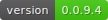
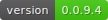

flarchitect¶
advanced_configuration
 



flarchitect turns your SQLAlchemy models into a polished RESTful API complete with interactive Redoc or Swagger UI documentation. Hook it into your Flask application and you’ll have endpoints, schemas and docs in moments.
What can it do?
Automatically detect and create endpoints, including nested relationships.
Standardise responses with a consistent structure.
Authenticate users with JWT access and refresh tokens.
Restrict endpoints to specific roles with Role-based access.
Add configurable rate limits backed by Redis, Memcached or MongoDB.
Be configured globally in Flask or per model via
Metaattributes.Generate Redoc or Swagger UI documentation on the fly.
Extend behaviour with response callbacks, custom validators and per-route hooks (Callbacks, validators and hooks).
Advanced Configuration¶
Need finer control? The Advanced Configuration guide covers features like rate limiting, CORS, and custom cache backends.
What are you waiting for…?
Turn this.
class Book(db.Model):
id = db.Column(db.Integer, primary_key=True)
title = db.Column(db.String(80), unique=True, nullable=False)
author = db.Column(db.String(80), nullable=False)
published = db.Column(db.DateTime, nullable=False)
Into this:
GET /api/books
{
"datetime": "2024-01-01T00:00:00.0000+00:00",
"api_version": "0.1.0",
"status_code": 200,
"response_ms": 15,
"total_count": 10,
"next_url": "/api/authors?limit=2&page=3",
"previous_url": "/api/authors?limit=2&page=1",
"errors": null,
"value": [
{
"author": "John Doe",
"id": 3,
"published": "2024-01-01T00:00:00.0000+00:00",
"title": "The Book"
},
{
"author": "Jane Doe",
"id": 4,
"published": "2024-01-01T00:00:00.0000+00:00",
"title": "The Book 2"
}
]
}
Let’s get started!